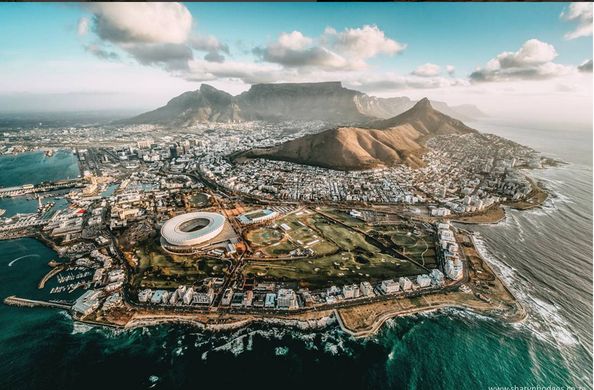
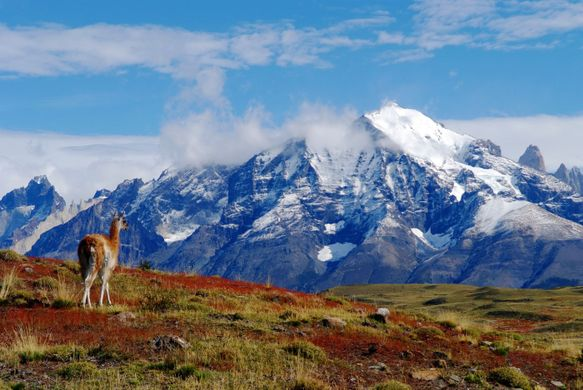
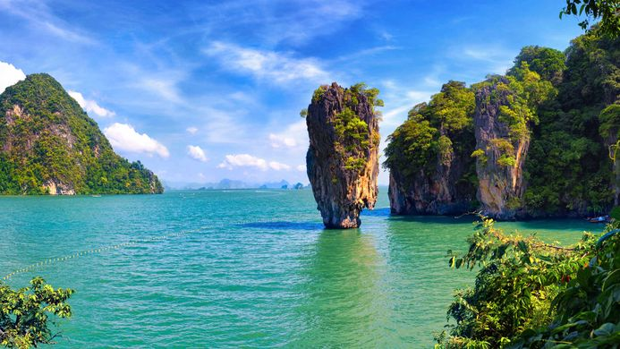

My Images
My Favorite Images



Image Map Tag
Click on objects within the picture to find out more about them:

Background Image Tag
I like this image of Cape Town the most right now
I will be going to South Africa in July
I will be there for the remainder of 2019
I am learning IsiXhosa
Which is a Bhantu language
Originating from the Zulu Tribes
Molweni Manene Manenkazi!